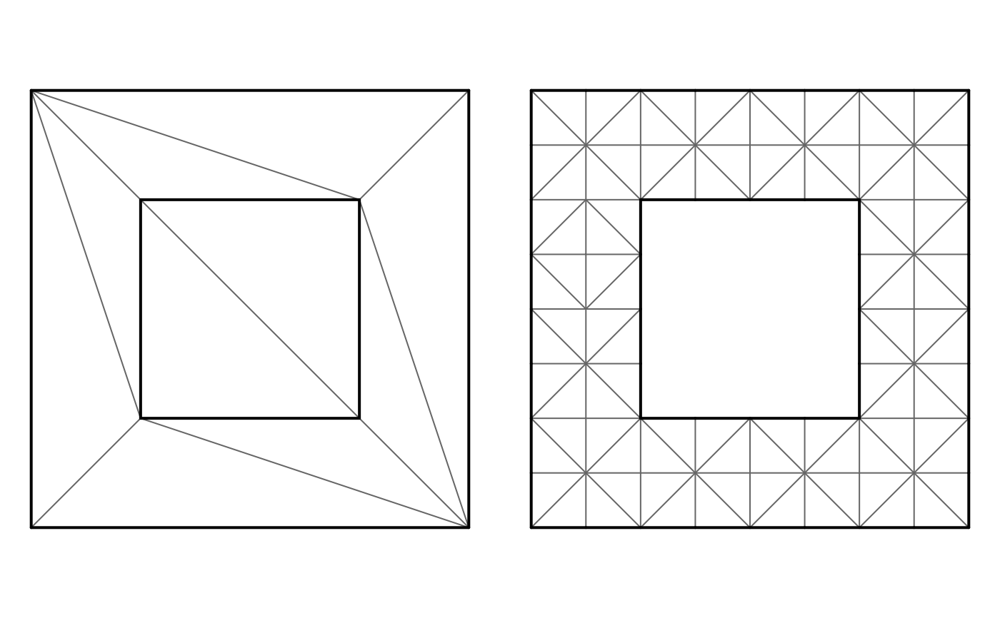

Thin binding to the artem-ogre/CDT library. Input mirrors RTriangle::pslg: vertices as x/y and constraint segments as index pairs into the vertices.
Arguments
- x, y
vertex coordinates
- s0, s1
1-based vertex indices of constraint segment start/end (may be NULL)
- max_area
maximum triangle area (Ruppert refinement by area), NULL for none
- min_angle
minimum triangle angle in degrees, NULL for none
- max_steiner
budget of Steiner points to insert (Inf for unlimited)
- min_edge_length
refinement does not split edges or triangles already shorter than this. NULL (the default) chooses a value from the input and the targets (see
default_min_edge_length()): a fraction of the median constraint segment length, capped so that it never blocks themax_areatarget. This stops the refiner cascading into sharp input corners. Use 0 to never give up.- min_edge_frac
fraction of the median constraint segment length used when
min_edge_lengthis NULL- area_edge_frac
fraction of
sqrt(max_area)that caps the default floor- conforming
if TRUE use conforming (Steiner on segments) instead of constrained
- erase
one of "outer" (drop triangles outside the segment-bounded region, as RTriangle's
-pdoes), "hull" (keep the convex hull), "holes" (also drop even-depth regions). With no segments there is no boundary, so "hull" is used.- intersect
how crossing constraints are handled: "resolve" inserts the crossing point, "error" fails, "ignore" skips the check
- angle_first
when both criteria are given, refine by angle before area (default is area then angle; the two orderings differ little)
Value
list with P (vertices), T (1-based triangle indices), S (fixed edges), depth (per-triangle constraint layer depth: constraint crossings from the outside, so 0 is outside and for nested rings odd is inside, even a hole), n_input (vertices after dedupe, before Steiner), input_map (input vertex -> deduped vertex index), min_edge_length (the value used), and unrefined, a data frame with one row per refinement pass counting what CDT could not refine (short edges, sharp fixed corners, and so on)
Examples
## a square with a square hole: two closed rings of segments
x <- c(0, 1, 1, 0, 0.25, 0.75, 0.75, 0.25)
y <- c(0, 0, 1, 1, 0.25, 0.25, 0.75, 0.75)
s0 <- 1:8; s1 <- c(2, 3, 4, 1, 6, 7, 8, 5)
## constrained: every segment is an edge, depth says where each triangle is
r <- cdt_triangulate(x, y, s0, s1)
r$depth ## 1 = inside the outer ring, 2 = inside the hole (nested rings)
#> [1] 2 1 1 1 2 1 1 1 1 1
## refined, and the hole removed
r2 <- cdt_triangulate(x, y, s0, s1, max_area = 0.01, min_angle = 25, erase = "holes")
nrow(r2$T); r2$unrefined
#> [1] 96
#> criterion shortEdgeTriangles circumcenterOutside circumcenterOnVertex
#> 1 area 0 0 0
#> 2 angle 0 0 0
#> sharpFixedCorner shortEdges splitVertexInvalid
#> 1 0 0 0
#> 2 0 0 0
op <- par(mfrow = c(1, 2), mar = rep(0.5, 4))
for (m in list(r, r2)) {
e <- cdt_edges(m)
plot(m$P, asp = 1, axes = FALSE, xlab = "", ylab = "", pch = ".")
segments(m$P[e[, 1], 1], m$P[e[, 1], 2], m$P[e[, 2], 1], m$P[e[, 2], 2], col = "grey40")
segments(m$P[m$S[, 1], 1], m$P[m$S[, 1], 2], m$P[m$S[, 2], 1], m$P[m$S[, 2], 2], lwd = 2)
}

par(op)